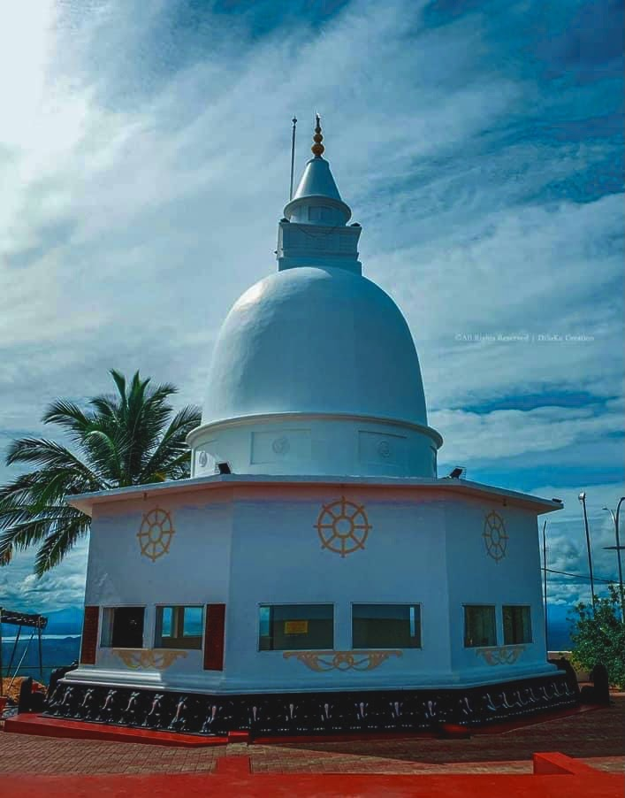

Vedihiti Kanda is a rocky mountain located 3.5 km from Kataragama Temple. Apart from Kataragama Temple and Sella Kataragama, Vedihiti Kanda is a famous place for Kataragama pilgrims. Little is known about the Vedihiti mountain, but legend reveals that the mountain has a strong association with the god Kataragama. It is said in past legends that King Dutugemuwa assured Kataragama God that if he defeated King Elara who ruled Anuradhapura, he would build a great temple. When the war was over, King Dutugemunu entered Kataragama and met the God of Kataragama. It is said that this meeting took place on the top of the hill. Then the king asked where the temple should be built. After that, he declared that the Buddha temple should be built where the arrow falls using a bow and arrow. After detonating the arrow, it fell on the surface where the Kataragama temple is located today. Thus King Dutugemunu built this temple. 
Vedihiti Kanda is today an important pilgrimage site for both Buddhists and Hindus. Every year, thousands of devotees climb the mountain to worship Lord Kataragama and seek blessings for themselves and their loved ones. Additionally, hiking is considered a spiritual experience, allowing devotees to connect with nature and reflect on their lives. Apart from its religious significance, Vedihiti Kanda is an important archaeological site. The ancient shrine on top of the hill is a testament to Sri Lanka's rich history and culture. However, in recent years, the antiquity of the hill has been threatened by the construction of new sacred rooms, which have changed the original landscape. Despite these differences, Elder Mountain remains a popular destination for those seeking spiritual guidance and cultural enrichment. The peaceful atmosphere and panoramic views from the summit are still worth the climb even for non-believers. Hence, Mount Vedihiti remains a beloved landmark in Sri Lanka's religious and cultural landscape, a testament to the enduring legacy of the country's ancient past.